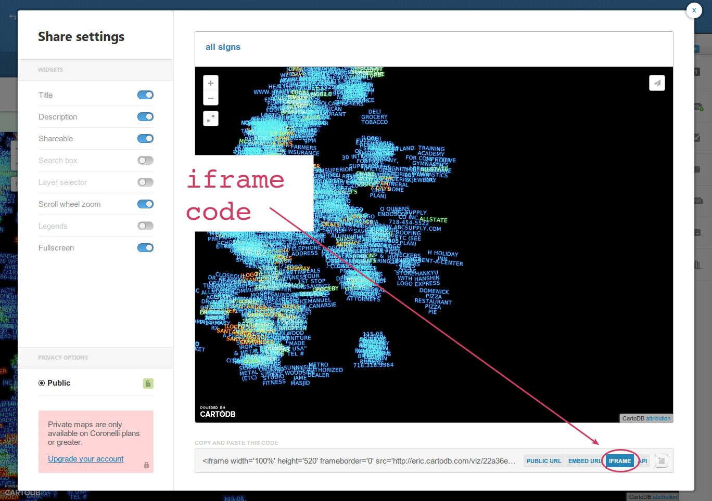
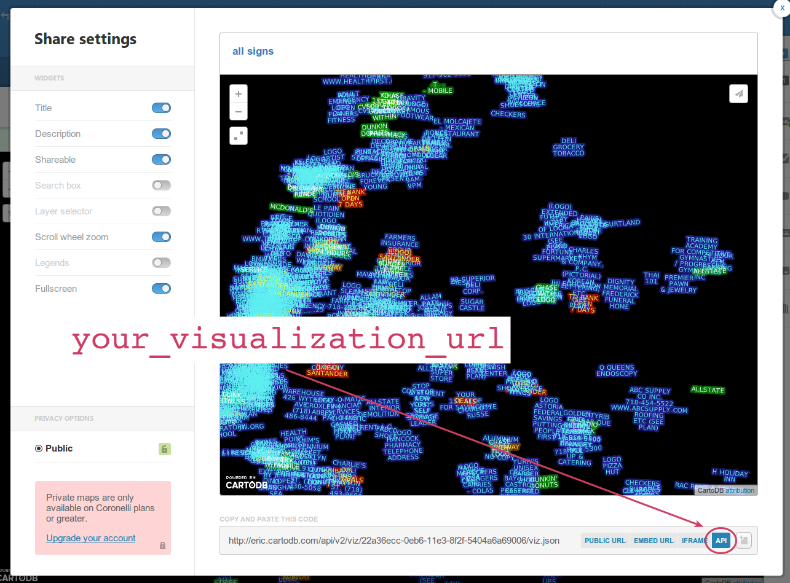

when you have a moment, download in_class_files.zip from Lore, under Class 9
<div id="map"></div>
??? {
height: 500px;
width: 500px;
}
Advanced GIS
Class 9
JavaScript
embed a CartoDB map

<iframe width='100%' height='520' frameborder='0'
src='http://eric.cartodb.com/viz/22a36ecc-...'
allowfullscreen webkitallowfullscreen mozallowfullscreen
oallowfullscreen msallowfullscreen></iframe>
CartoDB map in JavaScript
3 steps:
1: load CartoDB and jQuery libraries
<link rel="stylesheet" href="http://libs.cartocdn.com/cartodb.js/v3/themes/css/cartodb.css" />
<!--[if lte IE 8]>
<link rel="stylesheet" href="http://libs.cartocdn.com/cartodb.js/v3/themes/css/cartodb.ie.css" />
<![endif]-->
<script src="http://libs.cartocdn.com/cartodb.js/v3/cartodb.js"></script>
<script src="http://ajax.googleapis.com/ajax/libs/jquery/2.1.0/jquery.min.js"></script>
<link rel="stylesheet" href="http://libs.cartocdn.com/cartodb.js/v3/themes/css/cartodb.css" />
<!--[if lte IE 8]>
<link rel="stylesheet" href="http://libs.cartocdn.com/cartodb.js/v3/themes/css/cartodb.ie.css" />
<![endif]-->
<script src="http://libs.cartocdn.com/cartodb.js/v3/cartodb.js"></script>
<script src="http://ajax.googleapis.com/ajax/libs/jquery/2.1.0/jquery.min.js"></script>
(you'll copy and paste this)
2: make a place for the map to go
<body>
<div id="map"></div>
</body>
3: tell CartoDB to create the map
<script>
$(document).ready(function () {
cartodb.createVis('map', 'http://eric.cartodb.com/api/v2/viz/22a36ecc-0eb6-11e3-8f2f-5404a6a69006/viz.json');
});
</script>
<script>
$(document).ready(function () {
cartodb.createVis('map', your_visualization_url);
});
</script>

- load CartoDB and jQuery libraries
- make a place for the map to go
- tell CartoDB to create the map
why?
more customization
eg, remove the logo
<script>
$(document).ready(function () {
cartodb.createVis('map', your_visualization_url, {
cartodb_logo: false
});
});
</script>
<script>
$(document).ready(function () {
cartodb.createVis('map', your_visualization_url, {
cartodb_logo: false
});
});
</script>
try it:
remove the logo from your map
<script>
$(document).ready(function () {
cartodb.createVis('map', your_visualization_url, {
cartodb_logo: false
});
});
</script>
or bigger changes
 code
code
there are more options
we need a few other concepts before going on
function
<script>
$(document).ready(function () {
cartodb.createVis(your_map_id,
your_visualization_url,
your_options);
});
</script>
functions are small bundles of code that can be reused
your map's id, url, options are called parameters
parameters
<script>
$(document).ready(function () {
cartodb.createVis(your_map_id,
your_visualization_url,
your_options);
});
</script>
parameters affect the way a function works
alert(message)
try it:
open developer tools, go to the console tab, and type
alert('hi!')
var name = 'eric';
alert(name);
remember variables from CartoCSS?
var name = 'eric';
alert('hi ' + name);
you can make your own functions
function sayHi(name) {
alert('hi ' + name);
}
try it:
put this in your map file (where it says "Add a function here")
function sayHi(name) {
alert('hi ' + name);
}
jQuery
jQuery
makes it easy to do some common things in JavaScript
anything starting with $ is talking to jQuery
(it's not standard JavaScript)
$('#map')
$('#map').hide()
$('#map').animate({ opacity: 0 })
try this on your map in the console:
$('#map').animate({ width: 0 })
$('#map').click(function () {
sayHi('<yourname>');
});
pick the div with id "map"
$('#map').click(function () {
sayHi('<yourname>');
});
when it's clicked
$('#map').click(function () {
sayHi('<yourname>');
});
run this code
$('#map').click(function () {
sayHi('<yourname>');
});
try it:
add this in your map file on the line after createVis:
$('#map').click(function () {
sayHi('<yourname>');
});
back to CartoDB
let's make a button that changes what's on the map
four steps:
- create a button
- get the map layer
- listen for a click on the button
- change the layer's SQL
1. create a button
<div id="just-manhattan">
just Manhattan
</div>
2. get the map layer
cartodb.createVis(...)
.done(function (vis, layers) {
dataLayer = layers[1].getSubLayer(0);
});
3. listen for a click on the button
$('#just-manhattan').click(function () {
...
});
4. change the layer's SQL
$('#just-manhattan').click(function () {
var sql = "SELECT * FROM sign_application_filings WHERE borough = 'MANHATTAN'";
dataLayer.setSQL(sql);
});
getting things online
homework
basically what we just did, but with a page and map you made